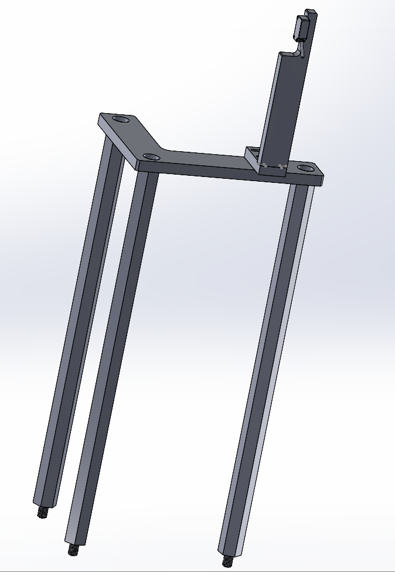

Case Study 04 · Sensor Fixture Design
Clutch Sensor Mounting Redesign
Root-cause-driven iteration on a safety-critical sensor fixture
Problem
A sensor on a continuous-motion production station monitors whether a mechanical clutch is properly engaged. This clutch is a critical safeguard against product damage and drivetrain wear, so false or missed readings from this sensor create real risk. The original (v1) mounting design was susceptible to vibration interference and required precise manual setup directly on the machine's moving assembly, creating a risk of mechanical binding if misaligned.
My Role & Constraints
I owned the full redesign, from diagnosing the v1 failure mode through the v2 mounting concept.
Approach & Key Decisions
- Root-caused the v1 issue to two compounding factors: direct attachment to a moving component (introducing vibration into sensor readings) and a manual alignment step with no margin for error.
- Redesigned the mount as a floor-standing fixture, fully decoupling the sensor from the machine's moving components.
- Added vibration isolation and a simplified, repeatable mounting/alignment process.


Expected Outcome
Design and fabrication are complete; installation is pending. Once installed, the v2 design is expected to: